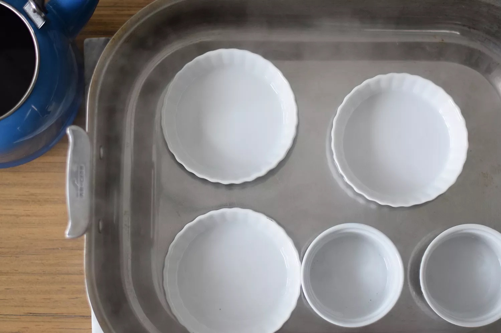

Instructions
-
Collect Egg Yolks
Pre-heat your oven to 300F. Collect 8 large egg yolks into your bowl.
-
Beat the Yolks Until Smooth
Use a whisk to beat the yolks for a minute or two, or until completely smooth.
-
Add the Sugar
Add 1/3 cup sugar and whisk for about 2 more minutes, or until the sugar is fully incorporated.
-
Add the Cream
Use 2 cups heavy cream, or to make it a bit lighter, use 2 cups of half and half. Add the cream and whisk until fully blended.
-
Add Pure Vanilla Extract
Add 1 teaspoon of pure vanilla extract and whisk until blended.
-
Strain the Custard Mixture
Straining the custard filters out any eggy bits to ensure a nice, smooth consistency.
-

Set up a Water Bath
Fill a large roasting pan with an inch or two of warm water, and place your empty ramekins into the pan.
-
Pour the Custard and Bake
Fill all the ramekins about halfway, then top up each one a little at a time. Bake for 35 minutes.
-
Cool In Water Bath
Remove the pan from the oven and allow the custards to cool in the water bath for 30 minutes or so.
-
Prepare to Caramelize
20 minutes before you want to caramelize them, take them out of the refrigerator and let them sit at room temperature.
-
Sprinkle Granulated Sugar
Sprinkle the tops of the Creme Brulees with granulated white sugar. Be generous.
-
Shake Off Excess Sugar
Pour excess onto the next Creme Brulee, until there are no loose granules remaining.
-
Flame On!
Follow the instructions for lighting yours, and adjust the length of the flame to medium.
-
Begin Lightly Torching the Sugar
Hold the torch a good distance away and slowly move it closer, while sort of rotating the flame.
-
The Sugar Will Darken and Form a Glaze
Heat until a nice, caramel-colored glaze forms on top of the Creme Brulee.
-

The Finished Creme Brulee
Put the Creme Brulees back into the refrigerator for 10 minutes or so before serving them.